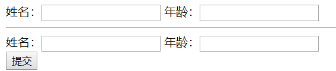
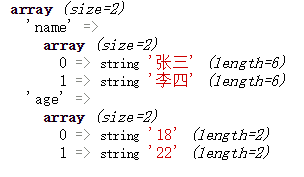
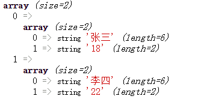
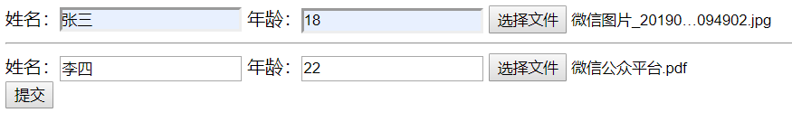
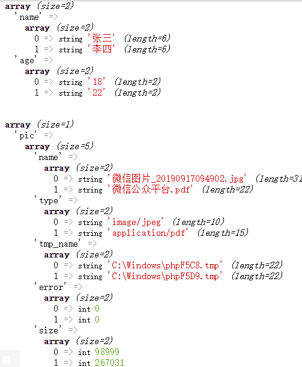

有的时候我们会遇到这样一个需求，一个用户页面中有多条履历信息，每条履历信息对应数据表中的一条记录，用户可以进行添加或修改，点击保存时同时提交到了后台。有两个难点：1、前端怎样一次性提交多条履历信息？2、后台如何获取 form 表单提交的多个 name 属性值相同的 input 标签中的值？
例如：

<form action="test.php" method="post" enctype="application/x-www-form-urlencoded">
姓名：<input type="text" name="name">
年龄：<input type="text" name="age">
<hr>
姓名：<input type="text" name="name">
年龄：<input type="text" name="age">
<input type="submit" class="submit">
</form>
在这个表单中共有两个字段：姓名，年龄。这两个字段的input中的name属性值都相同 。如果我们用默认的表单提交方式：分成两个表单分别提交，那只能提交一个表单的信息；如果放在一个表单中直接提交，那后台只能获取表单中的最后一条信息，因为name属性值相同，后面的信息会覆盖前面的信息。这个时候就必须使用另一种方法了。
1、纯文本内容的表单提交
首先，我们要重新处理表单代码，将name属性中的属性值后面加一个[]，加上[]相当于把值放入一个数组中 ，这样就不用担心后面的值会覆盖前面的值了。
<form action="test.php" method="post" enctype="application/x-www-form-urlencoded">
姓名：<input type="text" name="name[]">
年龄：<input type="text" name="age[]">
<hr>
姓名：<input type="text" name="name[]">
年龄：<input type="text" name="age[]">
<input type="submit" class="submit">
</form>当然，你也可以手动修改name属性中的值，添加一个标志，让它们变的不同，但比较麻烦，而且后台获取到之后处理起来比较麻烦。
现在页面修改完成，后台直接使用var_dump($_POST)打印一下前端传来的结果。
结果如下：

可以看到，后台接收到的数据是一个二维数组，key为表单中的name属性值。后台接收到之后再进行处理
for($i=0;$i<count($_POST['name']);$i++){
$arr[$i]=array_column($_POST,$i);
}
var_dump($arr);结果如下：

2、包含文件的表单提交

和纯文本表单上传一样，我们可以通过数组的方式提交表单信息。然后打印$_FILES数组
结果如下：

当然，除了这种方式还有另一种方式，那就是使用ajax提交。
代码如下：
<form enctype="multipart/form-data">
姓名：<input type="text" name="name">
年龄：<input type="text" name="age">
<input type="file" name="pic">
<hr>
姓名：<input type="text" name="name">
年龄：<input type="text" name="age">
<input type="file" name="pic">
</form>
<input type="submit" class="submit">
</body>
<script>
$('.submit').click(function () {
var form = $('form')[0];
var formdata = new FormData(form);
$.ajax({
url: 'test.php',
data: formdata,
type: 'post',
dataType: "json",
contentType: false,
processData: false,
success: function (data) {
// code…………
}
});
});
</script>FormData是js中的的一个对象，无需引入其它库可以直接使用。功能是将form表单元素的name与value进行组合，实现表单数据的序列化，从而减少表单元素的拼接，提高工作效率，也就是说可以代替表单提交。FormData的参数是一个DOM对象，使用Jquery方法时别忘了将获取的Jquery对象转换为DOM对象。之后再使用Ajax方法传给后台。其中contentType和processData属性的值都要设为false，功能是把表单中的enctype="application/x-www-form-urlencoded"转换为enctype="multipart/form-data"，否则文件会提交失败。
既然使用ajax方式提交表单非常麻烦，那我们为什么还要使用呢，主要是为了实现异步传输。很多时候用户提交完表单后想要知道是否提交成功，而后台也需要返回一个信息给用户，指导用户的下一步操作。如果不使用异步传输，那在用户填写完信息并提交后，后台如果发现错误返回错误详细给用户时，表单页面已经刷新完毕了，之前填的信息都要重新填写一遍或是更多。非常的麻烦。